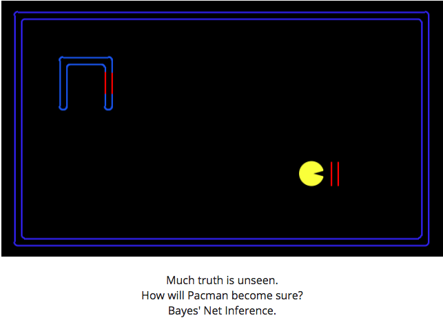
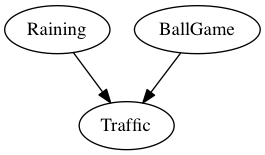
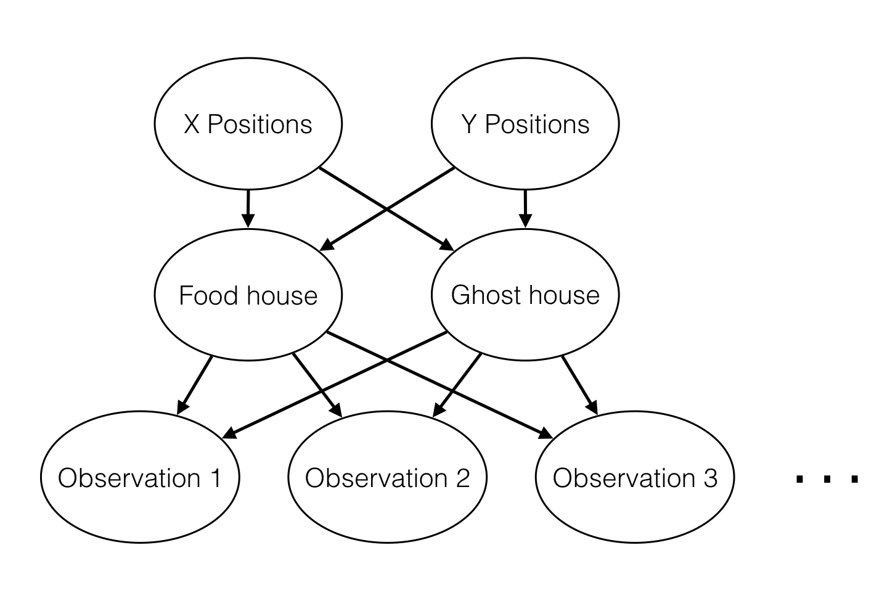

Introduction
Introduction

In this project, you will implement inference algorithms for Bayes Nets, specifically variable elimination and value-of-perfect-information computations. These inference algorithms will allow you to reason about the existence of invisible pellets and ghosts.
This project includes an autograder for you to grade your answers on your machine. This can be run on all questions with the command:
python autograder.py
It can be run for one particular question, such as q2, by:
python autograder.py -q q2
It can be run for one particular test by commands of the form:
python autograder.py -t test_cases/q2/1-simple-eliminate
See the autograder tutorial in Project 1 for more information about using the autograder.
The code for this project contains the following files, available as a zip archive.
| Files you'll edit: | |
factorOperations.py |
Operations on Factors (join, eliminate, normalize). |
inference.py |
Inference algorithms (enumeration, variable elimination, likelihood weighting). |
bayesAgents.py |
Pacman agents that reason under uncertainty. |
| Files you should read but NOT edit: | |
bayesNet.py |
The BayesNet and Factor classes. |
| Files you can ignore: | |
graphicsDisplay.py |
Graphics for Pacman |
graphicsUtils.py |
Support for Pacman graphics |
textDisplay.py |
ASCII graphics for Pacman |
ghostAgents.py |
Agents to control ghosts |
keyboardAgents.py |
Keyboard interfaces to control Pacman |
layout.py |
Code for reading layout files and storing their contents |
autograder.py |
Project autograder |
testParser.py |
Parses autograder test and solution files |
testClasses.py |
General autograding test classes |
test_cases/ |
Directory containing the test cases for each question |
bayesNets2TestClasses.py |
Project 4 specific autograding test classes |
Files to Edit and Submit: You will fill in portions of factorOperations.py, inference.py, and bayesAgents.py during the assignment.Before submission, you should compress the files into one single *.tar file. On Unix or Unix-like system, you can do this with the command:
tar cvf submit.tar factorOperations.py inference.py bayesAgents.py
If you are using Windows, you can compress the files with 7-Zip. Make sure it's a *.tar file and contains exactly 3 files factorOperations.py,inference.py and bayesAgents.py instead of a folder or anything else.
You need to submit your solution to our Autolab server, you can visit it at http://10.19.127.41/. If you have any question or find any bug of the platform, feel free to contact us. It is recommended to access the website using a proxy. The email system may be slow and you may need to wait for a few minutes to receive your registration email. Please see the announcement on Piazza and BB for detailed instruction of how to register your account.
Evaluation: Your code will be autograded for technical correctness. Please do not change the names of any provided functions or classes within the code, or you will wreak havoc on the autograder. However, the correctness of your implementation -- not the autograder's judgements -- will be the final judge of your score. If necessary, we will review and grade assignments individually to ensure that you receive due credit for your work.
Academic Dishonesty: We will be checking your code against other submissions in the class for logical redundancy. If you copy someone else's code and submit it with minor changes, we will know. These cheat detectors are quite hard to fool, so please don't try. We trust you all to submit your own work only; please don't let us down. If you do, we will pursue the strongest consequences available to us.
Getting Help: You are not alone! If you find yourself stuck on something, contact the course staff for help. Office hours, section, and the discussion forum are there for your support; please use them. If you can't make our office hours, let us know and we will schedule more. We want these projects to be rewarding and instructional, not frustrating and demoralizing. But, we don't know when or how to help unless you ask.
Discussion: Please be careful not to post spoilers.
TREASURE-HUNTING PACMAN
TREASURE-HUNTING PACMAN
Pacman has entered a world of mystery. Initially, the entire map is invisible. As he explores it, he learns information about neighboring cells. The map contains two houses: a ghost house, which is probably mostly red, and a food house, which is probably mostly blue. Pacman's goal is to enter the food house while avoiding the ghost house.
Pacman will reason about which house is which based on his observations, and reason about the tradeoff between taking a chance or gathering more evidence. To enable this, you'll implement probabilistic inference using Bayes nets.
To play for yourself, run:
python hunters.py -p KeyboardAgent -r
Bayes' Nets and Factors
Bayes' Nets and Factors
First, take a look at bayesNet.py to see the classes you'll be working with - BayesNet and Factor. You can also run this file to see an example BayesNet and associated Factors:
python bayesNet.py
You should look at the printStarterBayesNet function - there are helpful comments that can make your life much easier later on.
The Bayes' Net created in this function is shown below:

A summary of the terminology is given below:
- Bayes' Net: This is a representation of a probabilistic model as a directed acyclic graph and a set of conditional probability tables, one for each variable, as shown in lecture. The Traffic Bayes' Net above is an example.
- Factor: This stores a table of probabilities, although the sum of the entries in the table is not necessarily 1. A factor is of the general form
Recall that lower case variables have already been assigned. For each possible assignment of values to the
and
variables, the factor stores a single number. The
variables are said to be conditioned while the
variables are unconditioned.
- Conditional Probability Table (CPT): This is a factor satisfying two properties:
1. Its entries must sum to 1 for each assignment of the conditional variables
2. There is exactly one unconditioned variable.
The Traffic Bayes' Net stores the following CPTs:
QUESTION 1 (3 POINTS): BAYES NET STRUCTURE
Implement the constructBayesNet function in bayesAgents.py. It constructs an empty Bayes net with the structure described below. (We'll specify the actual factors in the next question.)
The treasure hunting world is generated according to the following Bayes net:

Don't worry if this looks complicated! We'll take it step by step. As described in the code for constructBayesNet, we build the empty structure by listing all of the variables, their values, and the edges between them. This figure shows the variables and the edges, but what about their values?
- X positions determines which house goes on which side of the board. It is either food-left or ghost-left.
- Y positions determines how the houses are vertically oriented. It models the vertical positions of both houses simultaneously, and has one of four values: both-top, both-bottom, left-top, and left-bottom. "left-top" is as the name suggests: the house on the left side of the board is on top, and the house on the right side of the board is on the bottom.
- Food house and ghost house specify the actual positions of the two houses. They are both deterministic functions of "X positions" and "Y positions"
- The observations are measurements that Pacman makes while traveling around the board. Note that there are many of these nodes---one for every board position that might be the wall of a house. If there is no house in a given location, the corresponding observation is none; otherwise it is either red or blue, with the precise distribution of colors depending on the kind of house.
QUESTION 2 (3 POINTS): BAYES NET PROBABILITIES
Implement the fillYCPT and fillObsCPT functions in bayesAgents.py. These take the Bayes net you constructed in the previous problem, and specify the factors governing the Y position and observation variables. (We've already filled in the X position and house factors for you.)
Here's the structure of the Bayes net again:
For an example of how to construct factors, look at the implementation of the factor for X positionsin fillXCPT.
The Y positions are given by values BOTH_TOP, BOTH_BOTTOM, LEFT_TOP and LEFT_BOTTOM. These variables, and their associated probabilities, are provided by constants at the top of the file.
If you're interested, you can look at the computation for house positions. All you need to remember is that each house can be in one of four positions: top-left, top-right, bottom-left, or bottom-right.
Observations are more interesting. Every possible observation position is adjacent to a possible center for a house. Pacman might observe that position to contain a red wall, a blue wall, or no wall. These outcomes occur with the following probabilities (again defined in terms of constants at the top of the file):
- If the adjacent house center is occupied by neither the ghost house or the food house, an observation is none with certainty (probability 1).
- If the adjacent house center is occupied by the ghost house, it is red with probability PROB_GHOST_RED and blue otherwise.
- If the adjacent house center is occupied by the food house, it is red with probability PROB_FOOD_RED and blue otherwise.
IMPORTANT NOTE: the structure of the Bayes Net means that the food house and ghost house might be assigned to the same position. This will never occur in practice. But the observation CPT needs to be a proper distribution for every possible set of parents. In this case, you should use the food house distribution.
Hints
There are only four entries in the Y position factor, so you can specify each of those by hand. You'll have to be cleverer for the observation variables. You'll find it easiest to first loop over possible house positions, then over possible walls for each house, and finally over assignments to (wall color, ghost house position, food house position) triples. Remember to create a separate factor for every one of the 4*7=28 possible observation positions.
Question 3 (5 points): Join Factors
Implement the joinFactors function in factorOperations.py. It takes in a list of Factors and returns a new Factor whose probability entries are the product of the corresponding rows of the input Factors.
joinFactors can be used as the product rule, for example, if we have a factor of the form and another factor of the form
, then joining these factors will yield
. So,
joinFactors allows us to incorporate probabilities for conditioned variables (in this case, ). However, you should not assume that
joinFactors is called on probability tables - it is possible to call joinFactors on Factors whose rows do not sum to 1.
Grading: To test and debug your code, run the commands like this:
python autograder.py -q q3
It may be useful to run specific tests during debugging, to see only one set of factors print out. For example, to only run the first test, run:
python autograder.py -t test_cases/q3/1-product-rule
Hints and Observations
- Your
joinFactorsshould return a newFactor. - Here are some examples of what
joinFactorscan do:
- For a general
joinFactorsoperation, which variables are unconditioned in the returnedFactor? Which variables are conditioned? Factors store avariableDomainsDict, which maps each variable to a list of values that it can take on (its domain). AFactorgets itsvariableDomainsDictfrom theBayesNetfrom which it was instantiated. As a result, it contains all the variables of theBayesNet, not only the unconditioned and conditioned variables used in theFactor. For this problem, you may assume that all the inputFactors have come from the sameBayesNet, and so theirvariableDomainsDicts are all the same.
Question 4 (4 points): Eliminate
Implement the eliminate function in factorOperations.py. It takes a Factor and a variable to eliminate and returns a new Factor that does not contain that variable. This corresponds to summing all of the entries in the Factor which only differ in the value of the variable being eliminated.
Grading: To test and debug your code, run
python autograder.py -q q4
It may be useful to run specific tests during debugging, to see only one set of factors print out. For example, to only run the first test, run:
python autograder.py -t test_cases/q4/1-simple-eliminate
Hints and Observations
- Your
eliminateshould return a newFactor. eliminatecan be used to marginalize variables from probability tables. For example:
- For a general
eliminateoperation, which variables are unconditioned in the returnedFactor? Which variables are conditioned? - Remember that
Factors store thevariableDomainsDictof the originalBayesNet, and not only the unconditioned and conditioned variables that they use. As a result, the returnedFactorshould have the samevariableDomainsDictas the inputFactor.
Question 5 (4 points): Normalize
Implement the normalize function in factorOperations.py. It takes a Factor as input and normalizes it, that is, it scales all of the entries in the Factor such that the sum of the entries in the Factor is 1.
Grading: To test and debug your code, run
python autograder.py -q q5
It may be useful to run specific tests during debugging, to see only one set of factors print out. For example, to only run the first test, run:
python autograder.py -t test_cases/q5/1-preNormalized
Hints and Observations
- Your
normalizeshould return a newFactor. normalizedoes not affect probability distributions (since probability distributions must already sum to 1).
- For a general
normalizeoperation, which variables are unconditioned in the returnedFactor? Which variables are conditioned? Make sure to read the docstring ofnormalizefor more instructions. - Remember that
Factors store thevariableDomainsDictof the originalBayesNet, and not only the unconditioned and conditioned variables that they use. As a result, the returnedFactorshould have the samevariableDomainsDictas the inputFactor.
Implement the normalize function in factorOperations.py. It takes a Factor as input and normalizes it, that is, it scales all of the entries in the Factor such that the sum of the entries in the Factor is .
Grading: To test and debug your code, run
python autograder.py -q q5
It may be useful to run specific tests during debugging, to see only one set of factors print out. For example, to only run the first test, run:
python autograder.py -t test_cases/q5/1-preNormalized
Hints and Observations
- Your
normalizeshould return a newFactor. normalizedoes not affect probability distributions (since probability distributions must already sum to ).- For a general
normalizeoperation, which variables are unconditioned in the returnedFactor? Which variables are conditioned? Make sure to read the docstring ofnormalizefor more instructions. - Remember that
Factors store thevariableDomainsDictof the originalBayesNet, and not only the unconditioned and conditioned variables that they use. As a result, the returnedFactorshould have the samevariableDomainsDictas the inputFactor.
Implement the normalize function in factorOperations.py. It takes a Factor as input and normalizes it, that is, it scales all of the entries in the Factor such that the sum of the entries in the Factor is .
Grading: To test and debug your code, run
python autograder.py -q q5
It may be useful to run specific tests during debugging, to see only one set of factors print out. For example, to only run the first test, run:
python autograder.py -t test_cases/q5/1-preNormalized
Hints and Observations
- Your
normalizeshould return a newFactor. normalizedoes not affect probability distributions (since probability distributions must already sum to ).- For a general
normalizeoperation, which variables are unconditioned in the returnedFactor? Which variables are conditioned? Make sure to read the docstring ofnormalizefor more instructions. - Remember that
Factors store thevariableDomainsDictof the originalBayesNet, and not only the unconditioned and conditioned variables that they use. As a result, the returnedFactorshould have the samevariableDomainsDictas the inputFactor.
Question 6 (4 points): Variable Elimination
Implement the inferenceByVariableElimination function in inference.py. It answers a probabilistic query, which is represented using a BayesNet, a list of query variables, and the evidence.
Grading: To test and debug your code, run
python autograder.py -q q6
It may be useful to run specific tests during debugging, to see only one set of factors print out. For example, to only run the first test, run:
python autograder.py -t test_cases/q6/1-disconnected-eliminate
Hints and Observations
- The algorithm should iterate over hidden variables in elimination order, performing joining over and eliminating that variable, until the only the query and evidence variables remain.
- The sum of the probabilities in your output factor should sum to one (so that it is a true conditional probability, conditioned on the evidence).
- Look at the
inferenceByEnumerationfunction ininference.pyfor an example on how to use the desired functions. (Reminder: Inference by enumeration first joins over all the variables and then eliminates all the hidden variables. In contrast, variable elimination interleaves join and eliminate by iterating over all the hidden variables and perform a join and eliminate on a single hidden variable before moving on to the next hidden variable.)
QUESTION 7 (1 POINTS): MARGINAL INFERENCE
Inside bayesAgents.py, use the inferenceByVariableElimination function you just wrote to compute the marginal distribution over positions of the food house, then return the most likely position (in Dict format). This information is used by Bayesian Pacman, who wanders around randomly collecting information for a fixed number of timesteps, then heads directly to the house most likely to contain food.